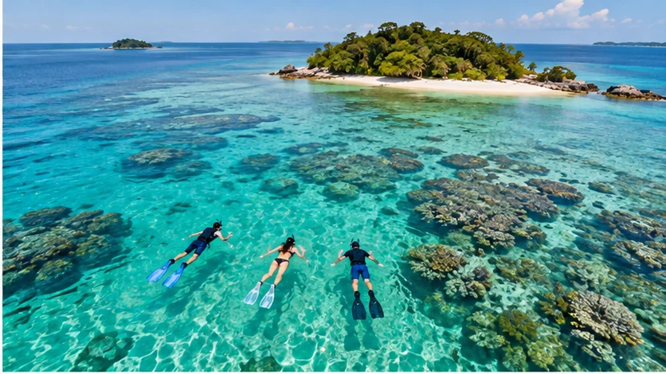

CONSERVATION
Laut memberi banyak.
Mari menjaganya bersama.
Wisata bahari dan kepedulian lingkungan harus berjalan bersama. Kami membuka ruang percakapan untuk edukasi, kegiatan komunitas, dan kebutuhan kolaborasi yang sesuai kapasitas.

LOW-IMPACT EXPLORATION
Pengalaman laut yang lebih sadar.
Jaga jarak dari satwa, jangan menyentuh karang, bawa kembali sampah Anda, dan ikuti arahan pemandu. Ketentuan detail aktivitas dibicarakan sebelum perjalanan.
Mari berdiskusi ↗Punya gagasan kegiatan edukasi atau konservasi?
Beritahu tujuan, lokasi, waktu, dan bentuk kolaborasi yang Anda bayangkan.
Diskusikan kolaborasi ↗